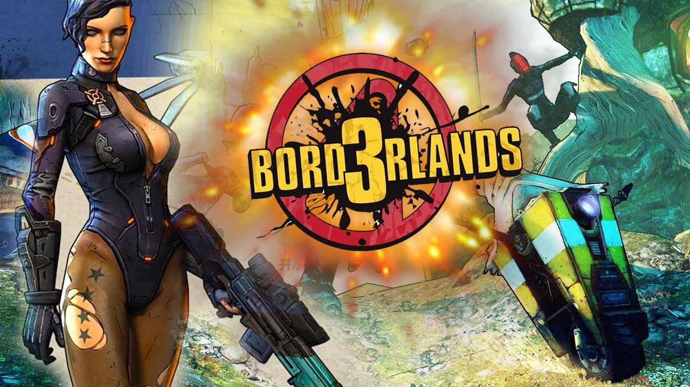

Borderlands 3

История разработки
Впервые о своих планах на продолжение франшизы Gearbox Software заявили в 2014 году. На тот момент концепция игры была ещё не сформирована[3]. В январе 2015 года был открыт набор кадров для разработки игры[4], а через два года студией были представлены технические наработки на движке Unreal Engine 4, на котором разрабатывается игра. Всего к разработке игры было привлечено около 90 % штата сотрудников компании из двух офисов — техасского и квебекского, для которого проект стал дебютным[5]. В частности, были приглашены Скотт Кестер, ранее трудившийся над Battleborn в роли арт-директора, и сценарист Майки Нейман[en], в июне 2017 года окончивший своё участие в разработке по состоянию здоровья[6]. 27 марта 2019 года компания выпустила игровой тизер[7], а на следующий день Borderlands 3 была официально анонсирована на презентации PAX East 2019[en][8]. 1 апреля было объявлено, что релиз игры состоится 13 сентября 2019 года[2]. Первоначально на персональных компьютерах игра будет распространяться через онлайн-сервис Epic Games Store, релиз игры в Steam запланирован на апрель 2020 года[9].
Игровой процесс
Borderlands 3, как и предыдущие игры серии, является RPG-шутером от первого лица[10] с возможностью кооперативного прохождения[11]. Тем не менее, геймплей проекта получил изменения. Управление персонажем было дополнено возможностью взбираться на препятствия и совершать подкаты. Количество активных навыков было увеличено до трёх[12].
В кооперативный режим была введена отключаемая система по синхронизации уровня игрока с уровнем добываемого снаряжения и встречаемыми противниками[11].
Оружие
Благодаря процедурной генерации оружия, в игре будет свыше миллиарда его вариаций[13], для которых записано более 7,5 тысяч звуковых дорожек[14]. Характеристики оружия будут определяться степенью редкости, классом и маркой, под которой оно произведено. Без учёта особых марок (Anshin, Eridian и Pangolin), всего их будет представлено девять[12]. Под маркой Atlas (рус. Атлас) производится оружие с системой самонаведения; Vladof (рус. Владоф) выпускает продукцию, стреляющую очередями и дополняемую приспособлениями; корпорация Maliwan (рус. Маливан) производит двухстихийное оружие; Jakobs (рус. Джейкобс) — оружие с увеличенным критическим уроном и вероятностью рикошетов; Tediore (рус. Тедиор) — продукция, взрывающаяся при замене полного магазина и способная преследовать противников; Hyperion (рус. Гиперион) изготавливает оружие с увеличивающейся точностью по ходу стрельбы и наличествующее щитом при стрельбе через прицел; для марки Torgue (рус. Торг) характерно присутствие двух режимов ведения огня, один из которых подразумевает стрельбу липнущими снарядами; Dahl (рус. Даль) — оружие с режимом повышенного урона; бренд Children of the Vault (рус. Дети Хранилища) не имеет боеприпасов, но при длительной стрельбе перегревается[15].
Игровой мир
Игровой мир будет сформирован пятью[16] вымышленными планетами, из которых официально анонсированы три: пустынная Пандора; Прометея, киберпанк-стилистика которой была вдохновлена мангой Akira; и Эден-6[17]. Перемещение между ними будет осуществляться на космическом корабле Святилище-3 (англ. Sanctuary III), который станет свободно декорируемой базой протагонистов[12]. Планеты будут поделены на открытые локации с фрагментарно линейным дизайном[18].
Несмотря на то, что графическая составляющая игры, как и в предыдущих частях, выдержана в технологии сел-шейдинга, при разработке был сделан акцент на большую детализацию эффектов[6]. Окружающее пространство стало более интерактивным и частично разрушаемым[12].